古代の国家
 いっしょに
いっしょに読もう！
聖徳太子と飛鳥文化
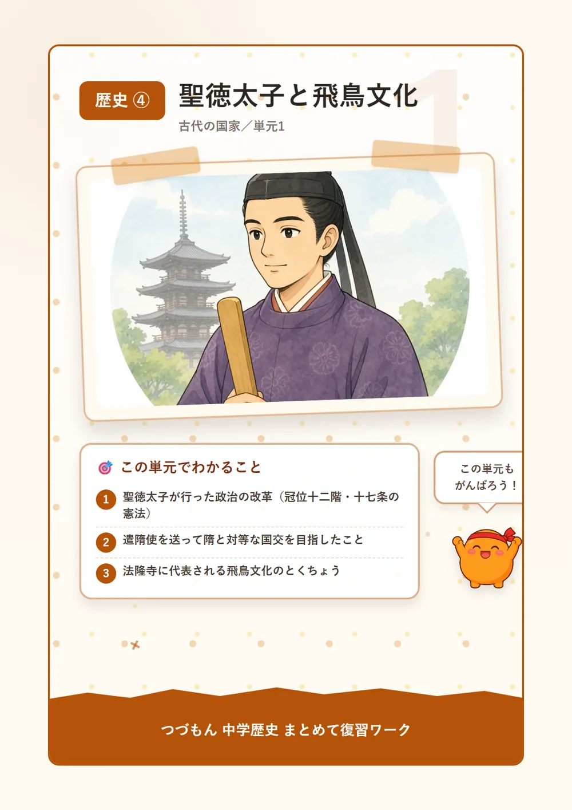
1聖徳太子の政治改革
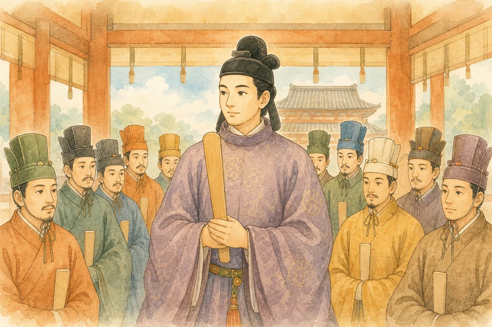
6世紀末、聖徳太子は推古天皇の摂政になって、蘇我馬子と力を合わせながら天皇中心の政治を目指したんだ。603年には、家柄ではなく才能や功績で役人の位を決める冠位十二階を定めて、能力のある人をどんどん役人に登用できるようにしたよ。604年には、役人の心構えを示す十七条の憲法をつくり、「和を以て貴しとなす」という言葉で人々の協調を説いて、仏教を大切にすることも求めたんだ。この二つの改革は、どちらも豪族の力を抑えて天皇のもとに国をまとめようとするねらいがあったんだよ。
2遣隋使と対等外交
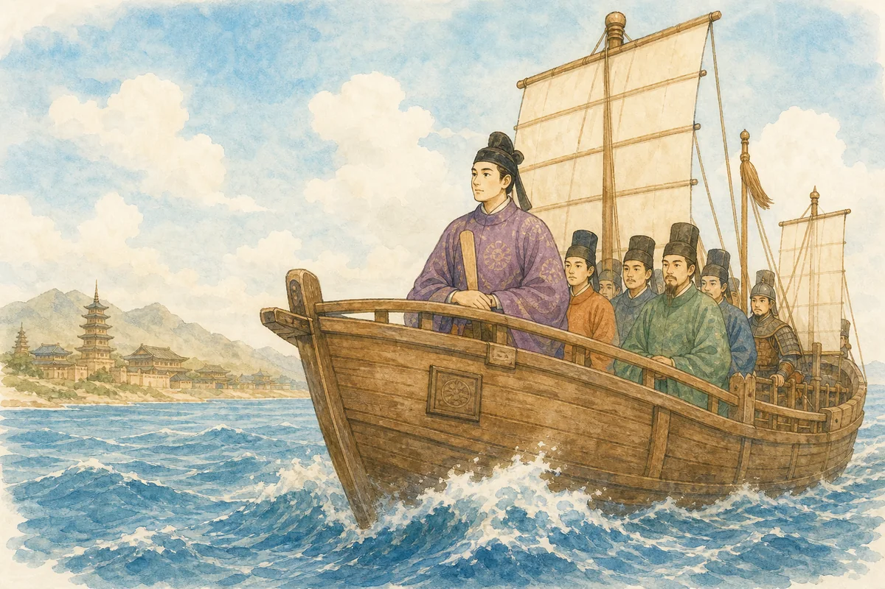
聖徳太子は607年、小野妹子を遣隋使として中国の隋に送ったんだ。目的は、進んだ制度や文化を学ぶことだけじゃなく、対等な立場で国交を結ぶことでもあったんだよ。妹子が持っていった手紙には「日出づる処の天子」という言葉が使われていて、隋の皇帝と同じ「天子」として日本を位置づけようとする姿勢が表れているんだ。この交流を通じて、日本は中国の政治のしくみや仏教文化を吸収して、のちの律令国家づくりの土台を築いていったんだね。
3飛鳥文化の誕生
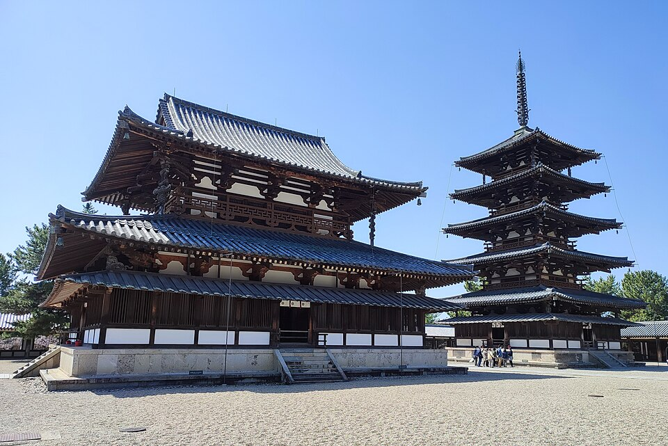
6世紀に百済から伝わった仏教は、受け入れに賛成した蘇我氏と反対した物部氏の争いを経て、蘇我氏が勝利したことで本格的に広まっていったんだ。聖徳太子と蘇我馬子は力を合わせて仏教を保護し、聖徳太子が建てたと伝えられる法隆寺は、現存する世界最古の木造建築として知られているんだよ。法隆寺金堂の釈迦三尊像などとともに、日本で最初の仏教文化である飛鳥文化を代表する存在になったんだね。

大化の改新
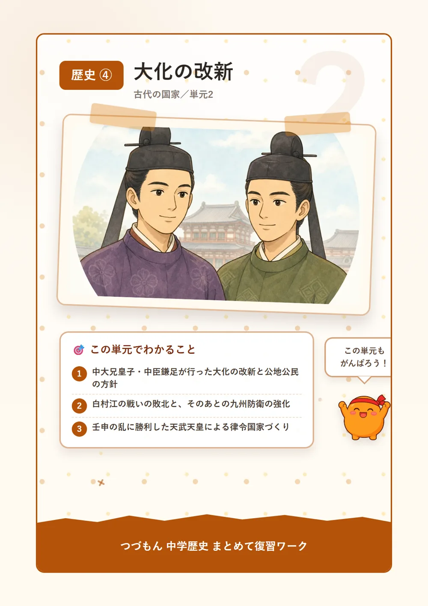
1大化の改新
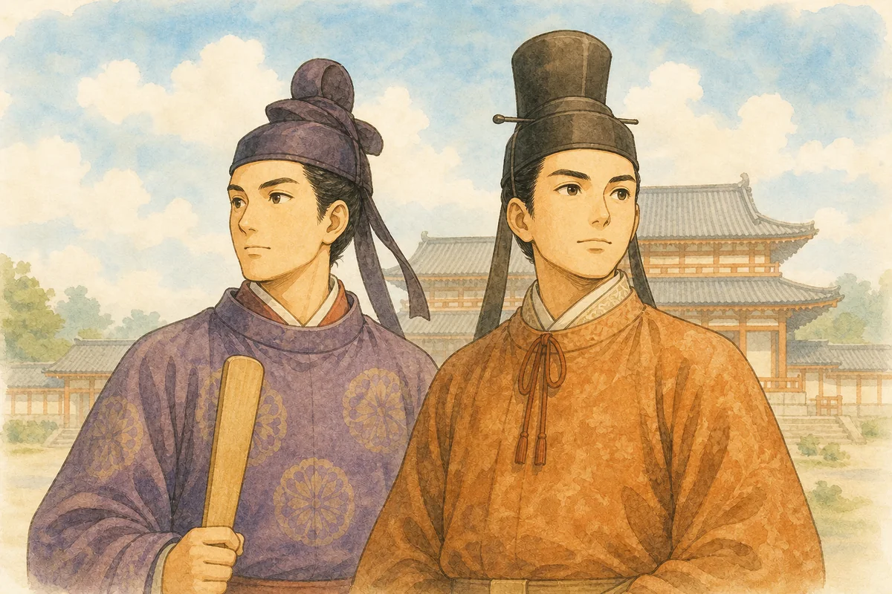
6世紀末以降、蘇我氏は天皇をしのぐほどの力を持つようになっていたんだ。645年、中大兄皇子は中臣鎌足と力を合わせて蘇我蝦夷・入鹿をたおし、大化の改新と呼ばれる政治改革を始めたよ。このとき、土地と人民は豪族のものではなく国家(天皇)が直接支配するという公地公民の方針が示されて、全国を国・郡・里に分けて治めるしくみづくりが進められたんだ。中臣鎌足はのちに天智天皇から藤原の姓をもらって、藤原氏の祖となったんだね。
2白村江の戦いと防衛の強化
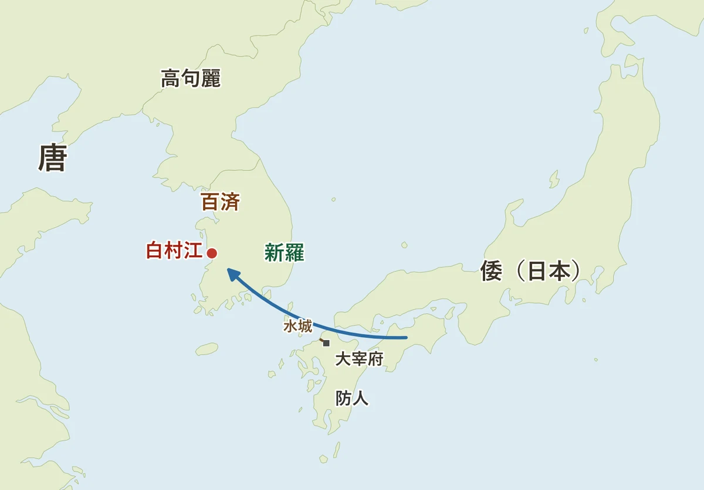
663年、日本は友好関係にあった百済の復興を助けようと朝鮮半島に出兵したけれど、白村江の戦いで唐・新羅の連合軍に大敗してしまったんだ。この敗戦をきっかけに、日本は唐・新羅の侵攻に備えて九州の防衛を強化し、大宰府を守る水城を築いて、東国の兵士を九州に送る防人の制度を整えたよ。中大兄皇子はのちに即位して天智天皇となり、天皇中心の国づくりをさらに急いだんだね。
3壬申の乱と天武天皇
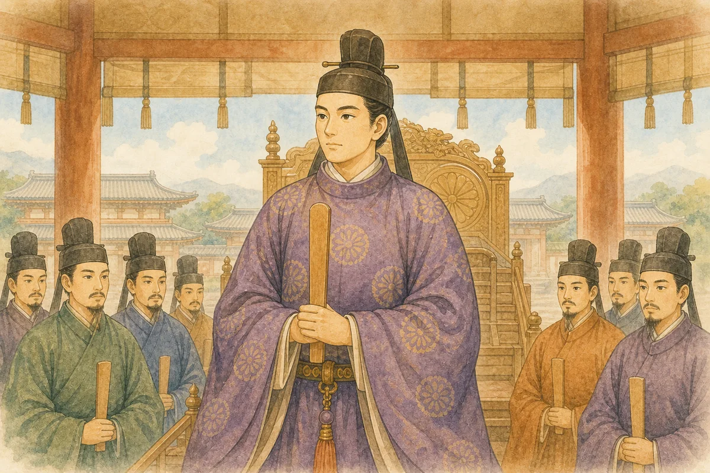
天智天皇が亡くなった672年、皇位をめぐって天皇の弟である大海人皇子と、天皇の子である大友皇子が争う壬申の乱が起こったんだ。勝利した大海人皇子は天武天皇として即位し、天皇の力をさらに強めながら律令国家づくりを進めたよ。その後を継いだ持統天皇は694年、唐の都をモデルにした日本初の本格的な都・藤原京を造営し、律令国家の完成へと歩みを進めたんだね。
律令国家と奈良時代
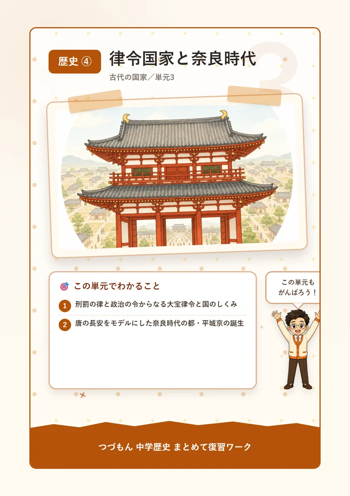
1大宝律令と国のしくみ
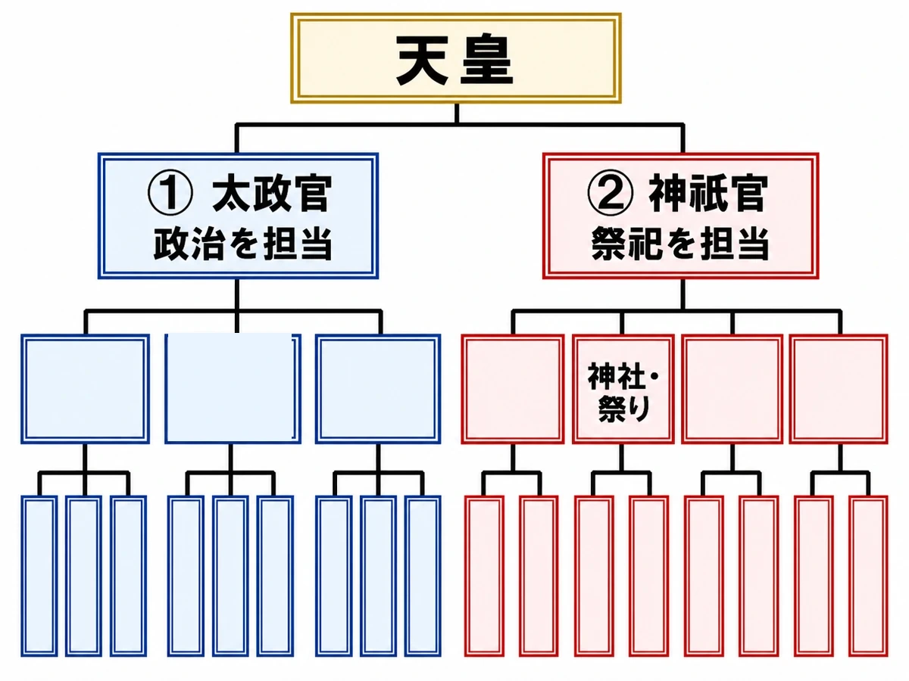
701年、唐の制度を手本にした大宝律令が完成して、日本は律令国家としての体制を整えたんだ。刑罰についての決まりである律と、政治のしくみについての決まりである令を合わせて律令と呼ぶんだよ。中央には政治を担当する太政官と祭りを担当する神祇官の二官が置かれて、地方には都から国司が派遣されて政治を監督し、その下で地元の有力者が郡司として実務を担ったんだ。九州には外交と防衛を担う大宰府も置かれたんだね。
2平城京の誕生
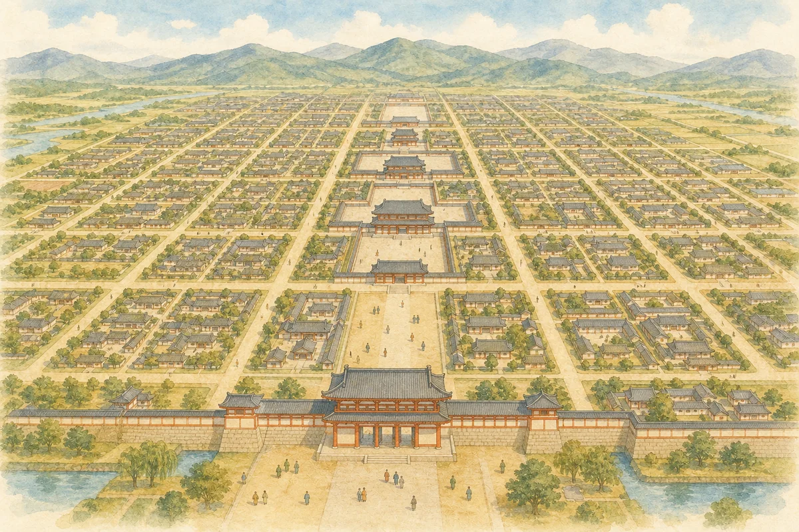
710年、唐の都・長安をモデルにした平城京が奈良につくられて、都が移されたんだ。都の中央を南北に貫く朱雀大路を境に東西に区画されて、碁盤の目のような都市計画がとられたんだよ。このころ、唐の貨幣を手本にした和同開珎も発行されて、都を中心に貨幣による経済のしくみも整えられていったんだね。平城京を中心としたこの約80年間を奈良時代というんだ。
班田収授法と税制度
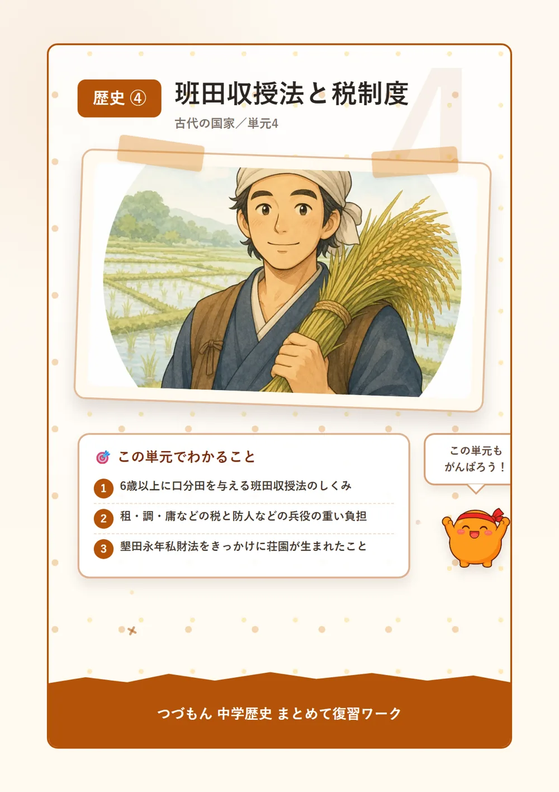
1班田収授法と口分田
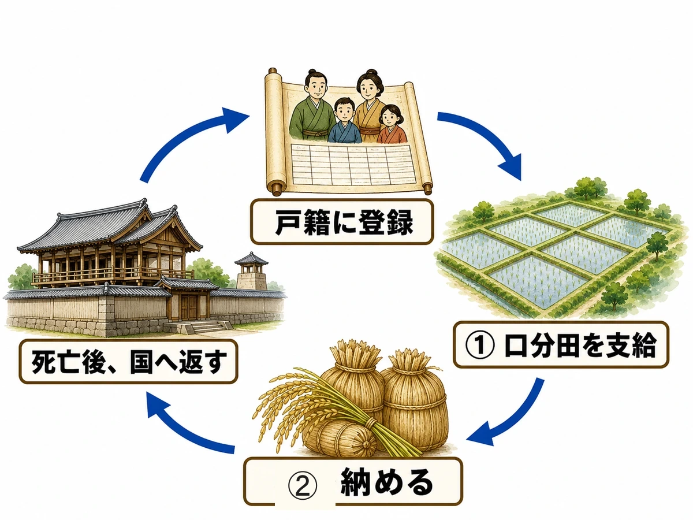
律令国家は6年ごとに作られる戸籍にもとづいて、6歳以上のすべての人々に口分田を与え、亡くなると国に返させる班田収授法を実施したんだ。これは、土地と人民を国家が直接支配するという公地公民の原則を、実際の土地制度として実現したものなんだよ。人々はこの口分田を耕して暮らしを立てる代わりに、国に対してさまざまな税や労役の義務を負うことになったんだね。
2重い税と兵役の負担
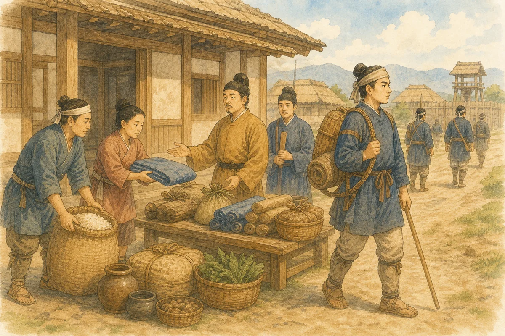
人々には、口分田の収穫量の約3%を稲で納める租、布や地方の特産物を都に納める調、都での労役の代わりに布を納める庸などの税が課されたんだ。調・庸を都まで運ぶ費用は農民自身の負担で、これが大きな重荷になったんだよ。さらに、九州北部の守りにつく防人は主に東国の農民から選ばれ、旅費も自分で用意して約3年間も任務にあたるなど、人々の生活を圧迫する要因になったんだね。
3荘園の始まり
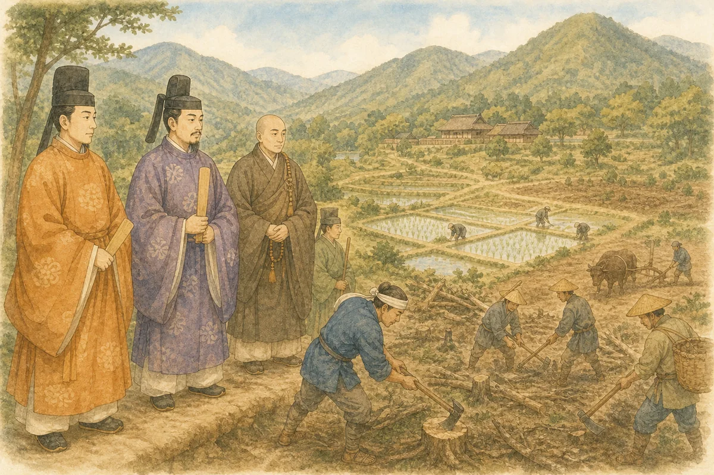
人口が増えると口分田が足りなくなり、朝廷は723年に開墾地を3代まで私有できる三世一身法を出したけれど効果はあまりなく、743年には開墾地の永久私有を認める墾田永年私財法が出されたんだ。これをきっかけに、貴族や寺社は開墾を進めて私有地である荘園を広げていき、土地と人民を国家が直接支配するという公地公民の原則は次第にくずれていくことになったんだよ。
天平文化
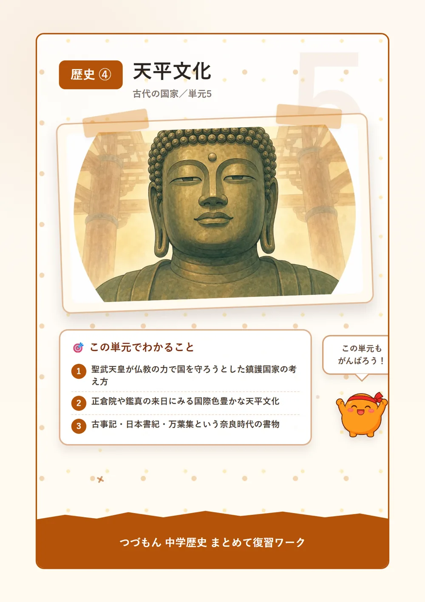
1聖武天皇と鎮護国家
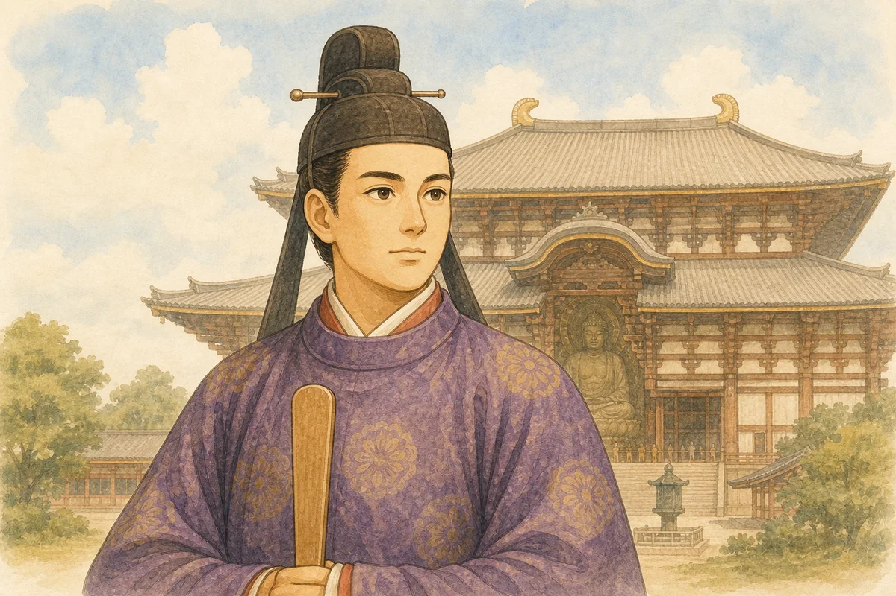
奈良時代、疫病や災害が続いて社会が不安定になると、聖武天皇は仏教の力で国を守り安定させようとする鎮護国家の考えにもとづいて、国ごとに国分寺・国分尼寺を建てさせ、都には東大寺を建てて大仏(盧舎那仏)をつくらせたんだ。大仏づくりには、民間で布教していた僧の行基も協力して、多くの人々の力を集めて完成させたんだよ。
2国際色豊かな天平文化
このころ、唐やシルクロードを通じて西アジアなどの文物も伝わって、国際色豊かな仏教文化である天平文化が栄えたんだ。聖武天皇ゆかりの品々は東大寺の正倉院に納められていて、三角形の木材を組み上げる校倉造という建築様式がとられているんだよ。唐の高僧鑑真は、正式な戒律を日本に伝えようと来日を試みたけれど、5度の失敗と失明という苦難を乗り越えて、6度目でついに来日を果たし、唐招提寺を開いたんだ。すごいよね。
3奈良時代の書物
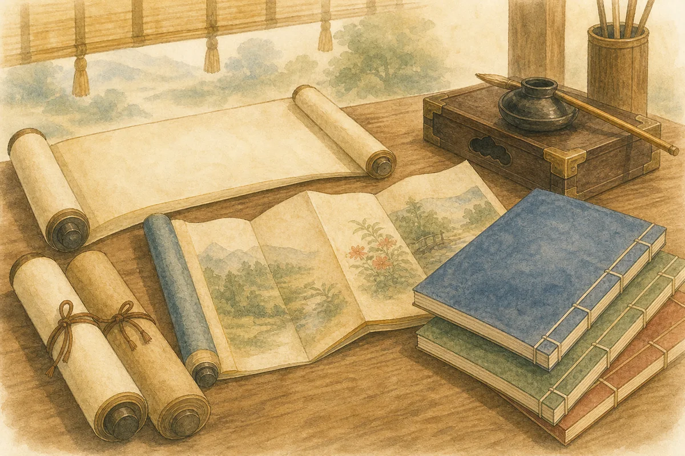
奈良時代には国の成り立ちを記す歴史書として、神話や伝承をもとにした「古事記」と、国家の正史としてまとめられた「日本書紀」が完成したんだ。また、天皇から農民・防人まで幅広い身分の人々の歌約4500首を集めた日本最古の和歌集「万葉集」もまとめられて、当時の人々の暮らしや心情を今に伝えてくれているんだよ。
平安京と新しい仏教
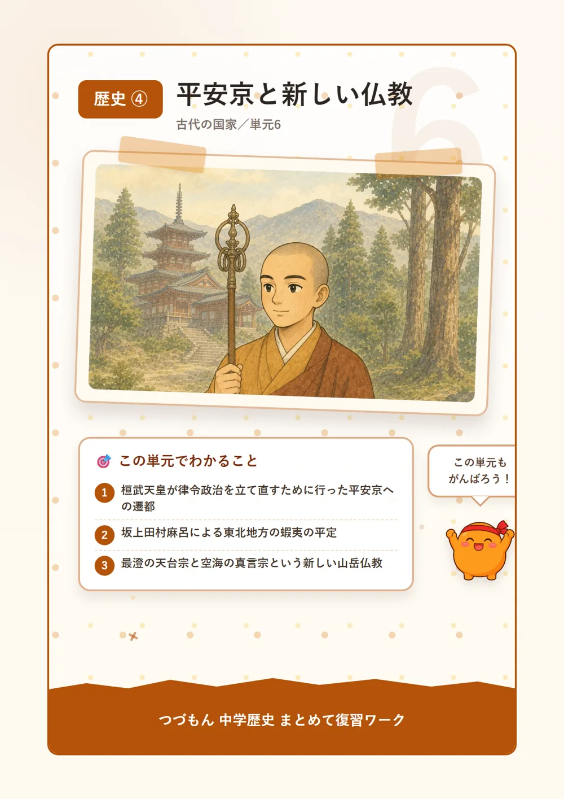
1桓武天皇と平安京への遷都
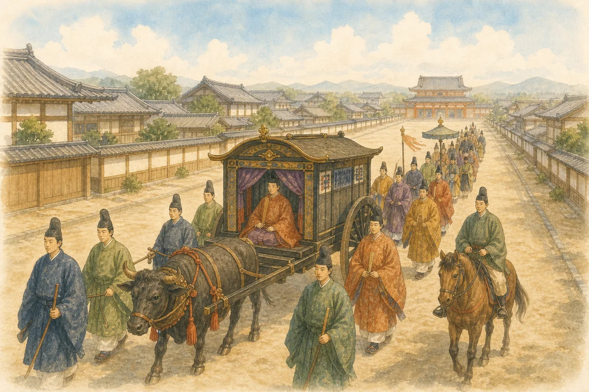
奈良時代の後半になると、都の大寺院が政治に口を出すなど問題が目立つようになったんだ。桓武天皇は律令政治を立て直そうと、784年にまず長岡京へ都を移し、さらに794年には平安京へ遷都したよ。これ以降、鎌倉幕府が成立するまでの約400年間を平安時代というんだね。
2坂上田村麻呂と東北平定
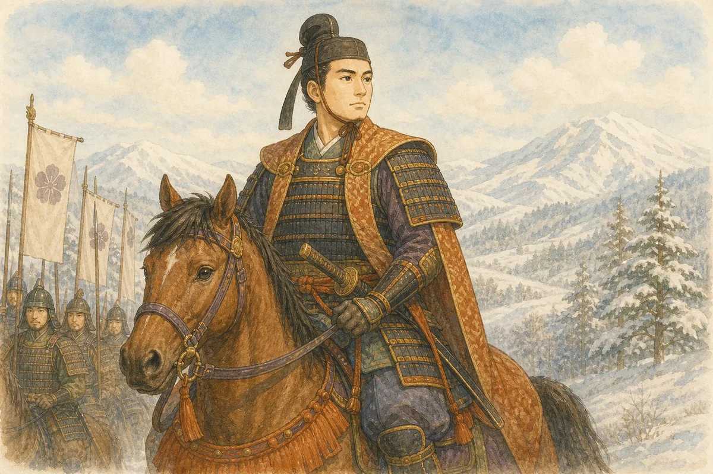
桓武天皇は、東北地方に住み朝廷の支配に従わなかった蝦夷を平定しようと、坂上田村麻呂を征夷大将軍に任命して東北へ派遣したんだ。坂上田村麻呂は激しく抵抗した蝦夷の指導者アテルイを降伏させて、朝廷の東北支配を大きく前進させたんだよ。「征夷」とは蝦夷を征伐するという意味なんだね。
3最澄と空海の新しい仏教
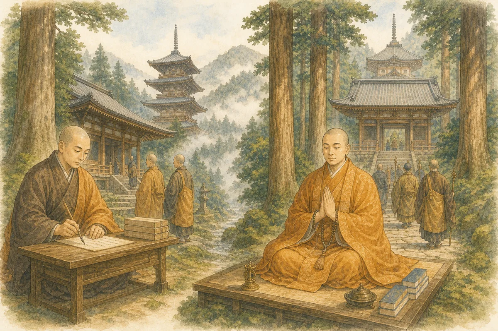
9世紀初め、唐に渡って仏教を学んだ最澄は、帰国後に比叡山延暦寺を建てて天台宗を開いたんだ。同じころ唐で密教を学んだ空海は、高野山金剛峯寺を建てて真言宗を開いたよ。二人が開いた仏教は、都の大寺院を中心とした奈良時代の仏教とは違って、山奥での修行と学問を重んじる山岳仏教という新しい特徴を持っていたんだね。
摂関政治
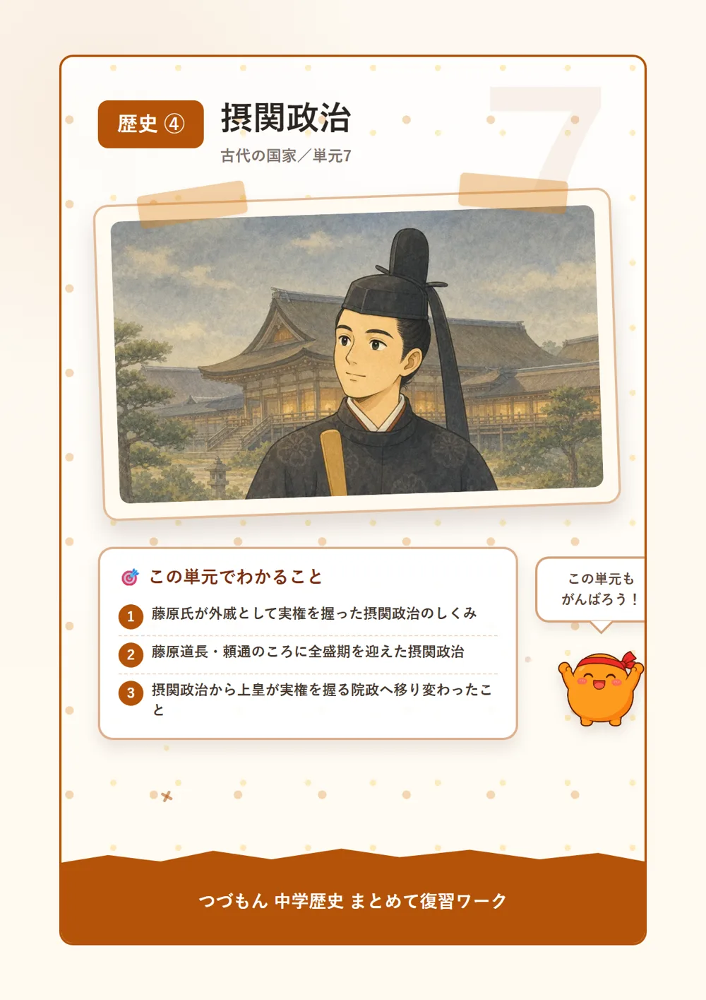
1藤原氏と摂関政治のしくみ
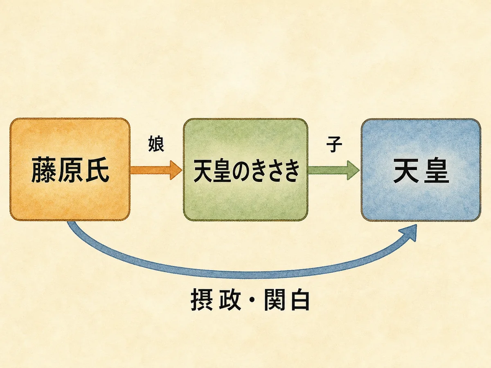
藤原氏は、自分の娘を天皇のきさきにして、生まれた子を天皇に立てることで、天皇の外戚(母方の親戚)という立場を手に入れたんだ。そして天皇が幼いときには摂政、成人したのちには関白という職について、政治の実権を握ったんだよ。このような藤原氏中心の政治を摂関政治というんだね。
2藤原道長と頼通の全盛期

摂関政治は11世紀前半、藤原道長とその子藤原頼通のときに最も栄えたんだ。道長は4人の娘を次々に天皇の后として、「この世をば わが世とぞ思ふ 望月の 欠けたることも なしと思へば」という歌で、欠けることのない満月にたとえて自らの栄華を表したんだよ。頼通は1053年、宇治に阿弥陀堂である平等院鳳凰堂を建てているんだね。
3摂関政治から院政へ
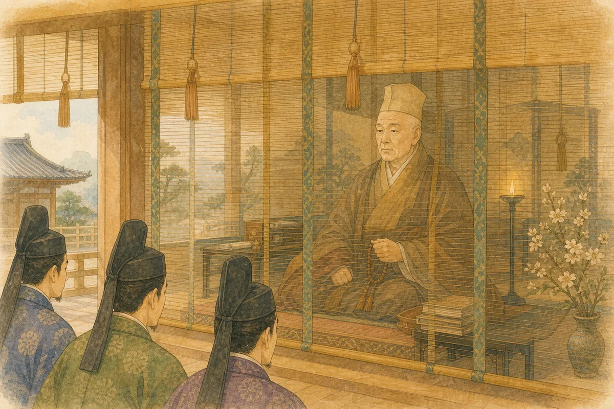
頼通に天皇の后となる娘が生まれなかったこともあって、摂関政治は次第に力を失っていったんだ。11世紀末になると、退位した天皇である上皇が実権を握る院政が白河上皇のもとで本格的に始まったよ。摂関政治は天皇の外戚である藤原氏の政治だったのに対して、院政は天皇の父や祖父にあたる上皇自身が実権を握る政治だという違いがあるんだね。
国風文化
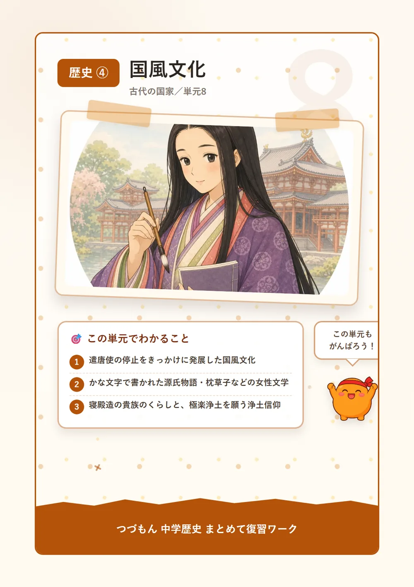
1遣唐使の停止と国風文化
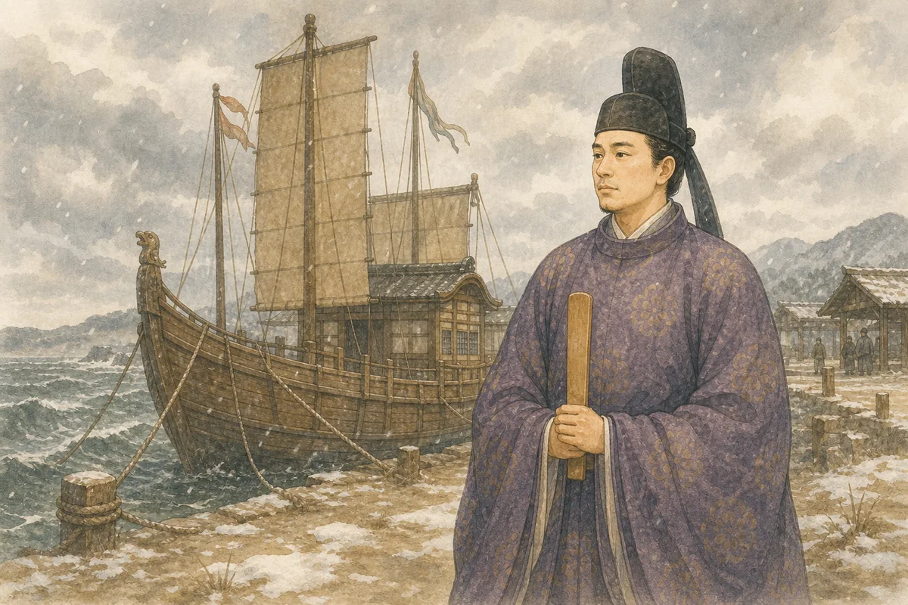
9世紀末、唐がおとろえて航海の危険も増えたことから、菅原道真の意見によって894年、遣唐使が停止されたんだ。これをきっかけに、それまで学んできた唐の文化をふまえながらも、日本の風土や生活に合った独自の国風文化が10〜11世紀ごろに栄えるようになったんだよ。
2かな文字と女性の文学
このころ、漢字をもとにした仮名文字(ひらがな・カタカナ)がつくられて、日本語の細やかな感情を書き表しやすくなったんだ。これによって宮廷に仕える女性による文学が花開き、紫式部は貴族社会を描いた長編物語「源氏物語」を、清少納言は宮中の暮らしをするどい感性でつづった随筆「枕草子」を著したんだよ。紀貫之らは天皇の命令による最初の勅撰和歌集「古今和歌集」もまとめているんだね。
3貴族のくらしと浄土信仰
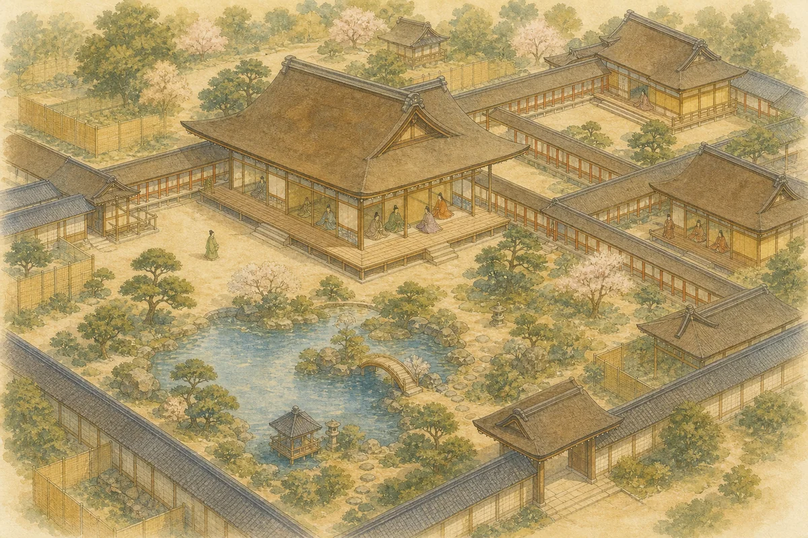
貴族の住宅は、中央に寝殿を置いて渡り廊下で建物を結ぶ寝殿造という様式で建てられて、日本の風景や生活を描いた大和絵も発達したんだ。また、仏教の教えが衰えるという末法思想を背景に、阿弥陀仏にすがって極楽浄土への生まれ変わりを願う浄土信仰も広まり、藤原頼通が建てた平等院鳳凰堂はその代表なんだよ。